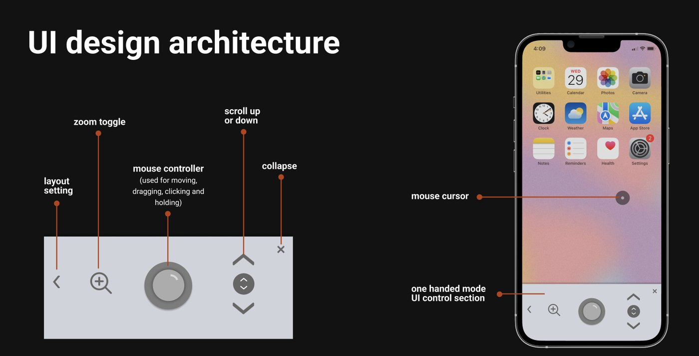
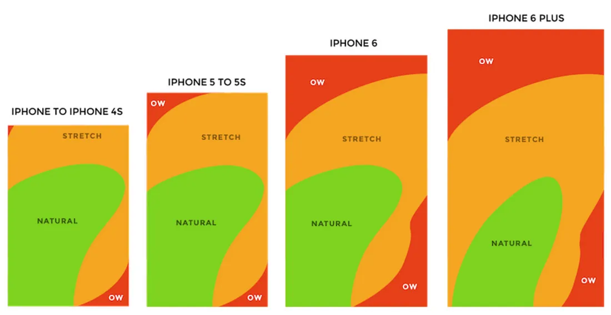
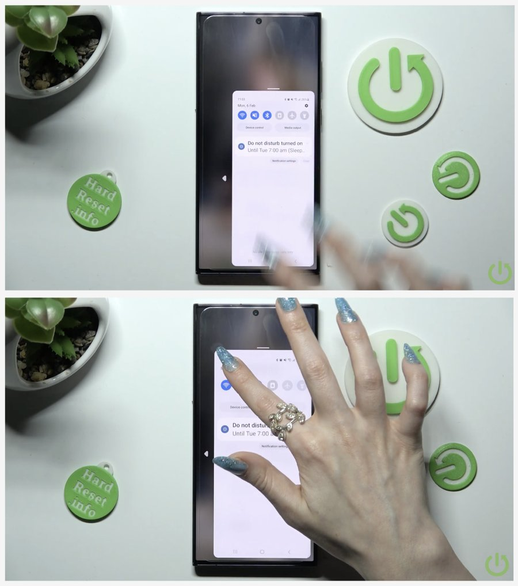
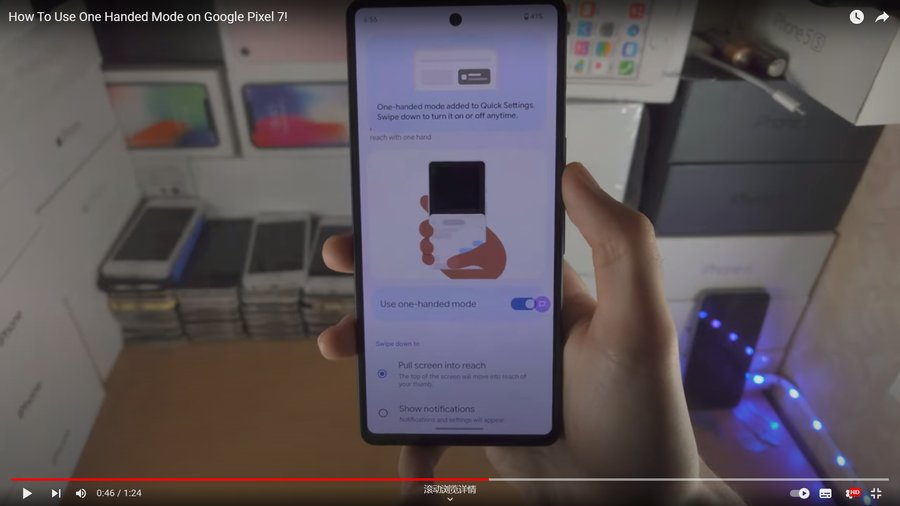
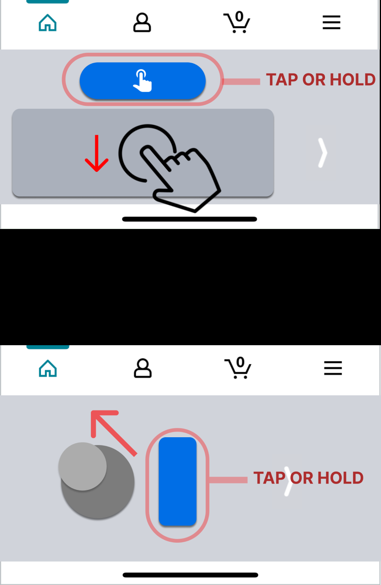
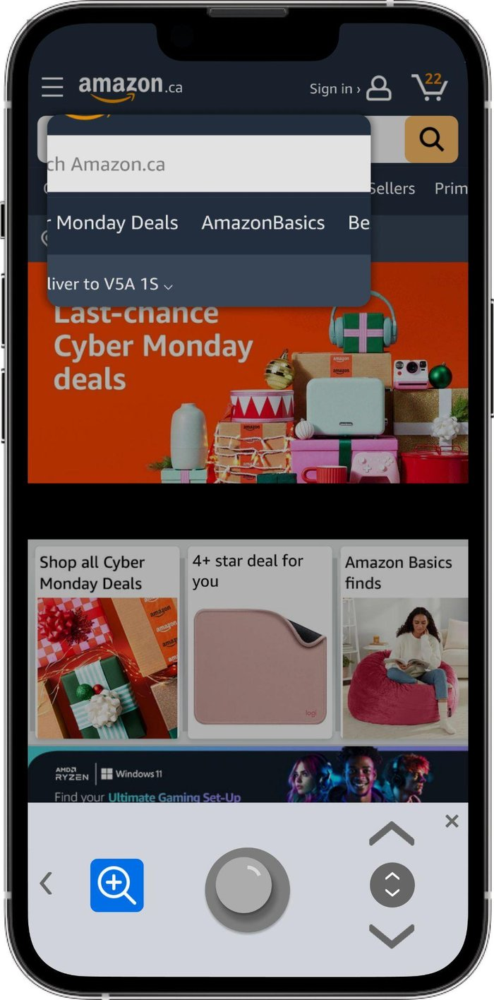

Reachability, Redesigning iPhone's One-Handed Mode
Reachability is Apple's built-in accommodation for one-handed use: a swipe down the home bar temporarily drops the interface so a thumb can reach the top of a large screen. It's a clever fix, but a temporary one. Drawing on HCI research methods and the ergonomics literature on single-handed device interaction, I evaluated how well Reachability actually holds up against the way people hold and use their phones, then proposed a control system, built into the keyboard, that extends one-handed use into full-time cursor control, zoom, scroll, and text editing.

Caption. The redesigned concept: a full-time one-handed control panel built into the iOS keyboard itself.
Long story short
iOS ships two disconnected one-handed fixes. I designed the full-time system that should sit between them.
Reachability and the one-handed keyboard solve different halves of the same problem and don't know the other exists. Grounded in ergonomics research and a competitive audit, I proposed a joystick-based control panel, built into the keyboard, that extends one-handed use into cursor control, zoom, scroll, and text editing full-time.
The gap
Reachability has to be re-triggered on every reach. The one-handed keyboard does nothing for zoom, scroll, or text selection.
The evidence
~85% of phone use is one-handed or cradled (Hoober, 2013), this isn't an edge case, it's most real-world use.
The concept
A joystick-based control panel replaces the temporary screen shift, staying in the thumb zone for an entire task, not one reach.
The scope
A research-driven concept, additive to Reachability rather than a replacement, validated by literature, not yet by users.
Context
Bigger iPhone screens improve the content experience, but they reintroduce old physical-interaction problems
Apple's own lineup, from the compact SE up to the six-plus-inch Pro Max, treats screen size as a spectrum rather than a solved question. Research from the Nielsen Norman Group has found that people gravitate toward larger screens for complex or important tasks: more content fits into a single screenful, and there's less anxiety about typos on tasks that matter. But that size comes at a cost. Even on Apple's regular and Max-sized phones, a thumb is regularly asked to cover more of the screen than it can comfortably reach, which is why Reachability isn't a rarely-used accessibility toggle. It's something most iPhone owners already reach for.
Who actually reaches for Reachability
Four groups depend on some version of one-handed use, for very different reasons.
Users with smaller hands
Thumb reach is a fixed physical constraint that scales worse every time screen size increases.
Users with upper-extremity impairments
A second hand may not be a reliable option at all, not just an inconvenient one.
Users multitasking with one hand occupied
Holding a coffee, a railing, or a child makes one-handed use situational rather than optional.
Users relying on accessibility features
Reachability is often a load-bearing part of how these users operate their phone at all, not an occasional convenience.
Two features that were never designed to work together
iOS ships two separate answers: Reachability, which temporarily drops the interface down, and a one-handed keyboard, which shifts the keys to one side. Neither knows the other exists, and neither does anything for zooming, scrolling, or text selection. Apple has one of the strongest accessibility reputations in the industry, which is exactly why that gap is worth noticing.
The Problem
Existing one-handed modes on iPhone behave more like temporary accommodations than full-time interaction systems.
Reachability has to be re-triggered every single time a thumb can't reach, and it borrows against the rest of the screen while it's active. The one-handed keyboard only solves half its own problem. The next section breaks down exactly where each of these falls short.
The Mission
Build a real, full-time control system into the one-handed keyboard, not another temporary accommodation to re-trigger.
A joystick-style controller maps cursor movement, zoom, scroll, and tap-and-hold onto a single thumb-reachable area, designed around thumb-zone ergonomics research rather than a shrunken screen.
Current shortfalls
Three specific ways today's one-handed modes fall short
Less usable screen, every time
Reachability solves a reach by dropping the interface down, costing screen space at the exact moment a user needs to see more of it, not less.
Caption. Gif needed, Reachability activating and the resulting loss of visible screen area.
Predictive text stuck in the hardest corner to reach
iOS shifts the keyboard letters for one-handed typing, but predictive-text suggestions stay put, often in the diagonal corner Karlson et al. (2006) found hardest for a thumb to reach.
Caption. Gif needed, the keyboard shifting while the predictive-text bar stays fixed.
Nowhere for two-finger gestures to go
Pinch-to-zoom needs a second hand, which by definition isn't available during one-handed use.
Caption. Gif needed, a one-handed pinch-to-zoom attempt failing without a second finger.
Research
Grounding the redesign in ergonomics research and a competitive audit
Part 1, HCI and ergonomics literature on single-handed interaction
Karlson, Bederson, and Contreras-Vidal (2006) found diagonal thumb movement toward a screen's far corner is the hardest motion for a right-handed thumb to make. That explains a real gap in iOS: when the keyboard shifts for one-handed typing, the predictive-text bar above it doesn't move with it.

Caption. Thumb-zone mapping across iPhone screen sizes. The 6s Plus zone shape became this interface's reference.
Steven Hoober's 2013 study found roughly 49% of users hold their phone one-handed, and another 36% use a cradled grip that still depends almost entirely on the thumb, about 85% of real-world use iOS's tools weren't built to support full-time.
Caption. Chart needed, the roughly 49% one-handed / 36% cradled / 15% two-handed split of phone grips, from Hoober's study.
Part 2, Auditing how major platforms support one-handed use
Three platforms already ship some version of a one-handed accommodation. None treat it as a full-time system, and none touch cursor precision, zoom, or scroll.


iPhone's own Reachability works the same way: a swipe drops the interface down, then snaps back once the tap lands, so reaching for the same button twice means re-triggering it twice. Any fix here has to work inside Apple's own interaction language, and go further than the other two by solving cursor precision, zoom, and scroll as well.
HCI framing
Grounding the proposed solution in the four waves of Human-Computer Interaction
HCI research is often described in three broad waves, each shaped by a different discipline, plus a newer interest in accessibility and inclusion. Checking this concept against each was a way to confirm a "solved" feature like Reachability actually holds up physically, culturally, and ethically.
Human factors & ergonomics
Where the thumb-zone research lives. Every measurement, from Hoober's reach zones to joystick placement, treats physical reach as a hard constraint, not a guess.
Everyday usability & culture
Why the concept leans on a mental model people already carry: how a thumb operates a game controller, rather than teaching something new.
Accessibility & inclusion
The anchor of the project. For upper-extremity impairment, Reachability is often the only way to operate the phone at all, nothing here removes that option, it only adds to it.
Why it matters
Why one-handed mode deserves more than a quick fix
Accessibility as the starting point
Designing first for upper-extremity impairment tends to produce better solutions for everyone, the same way curb cuts built for wheelchairs ended up helping strollers too.
A case for investment, not a nice-to-have
With ~85% of users holding their phone one-handed or cradled, solving this properly turns larger screens into an advantage instead of a reachability tax.
Even a design leader has room to grow
Reachability shipping, and getting widely copied, doesn't mean one-handed use is solved. It means the bar was set low enough that few have questioned it since.
Constraints
Constraints that shaped every decision
Adding one-handed capability risked packing the keyboard with enough new controls to overwhelm the exact users it was meant to help. Every decision below was weighed against that trade-off, and against staying inside Apple's own design language rather than introducing something unfamiliar.
Designing to prevent cognitive overload
iOS already has a dense set of interactive features. Each new control had to remove more friction than it added, or it didn't make the cut.
Staying within iOS's existing design language
The concept reuses Apple's existing Reachability gesture and visual style instead of introducing something new to learn, and stays scoped to iOS to keep six weeks realistic.
Leveraging users' existing mental models
Anyone who has used a game controller already understands how a joystick should behave, so that familiarity does most of the onboarding work for free.
Ideation to final concept
A flexible control panel built into the one-handed keyboard
The guiding principle was to stay additive: whatever we proposed had to sit on top of Reachability, not replace it. A trackpad direction worked, but a trackpad is a mental model people associate with a separate hand. A joystick maps naturally onto a single thumb's range of motion and borrows a mental model most people already carry from game controllers, so that's the direction that shaped the final concept.

The final design keeps iOS's existing activation gesture, but changes what happens after. Instead of a temporary screen shift, one-handed mode slides a control panel into the keyboard, staying in the natural thumb zone for an entire task, texting, browsing, or filling out a form, instead of one single reach.
Turning the control panel on and off
The panel opens with the same swipe-down gesture iOS already uses for Reachability, so there's nothing new to learn just to turn it on. A visible collapse control folds it back into the standard keyboard the moment a task calls for regular two-handed typing.
Caption. [Placeholder: gif showing the swipe-down gesture opening the control panel, and the collapse button folding it back into the standard keyboard.]
Cursor control, borrowed from a mouse, not a trackpad
A central joystick moves an on-screen cursor the same way a desktop mouse would, with click and hold-to-drag built into the same motion. It solves the exact case Reachability was built for, reaching the upper half of a large screen, but without shrinking the interface or re-triggering anything first.
Context menus that follow the keyboard, not the original tap
Long-pressing the central joystick brings up the same cut, copy, paste, and look-up bar users already expect, positioned above the keyboard on whichever side the one-handed layout is set to, left or right handed, instead of floating wherever the original tap happened to land. That's the same shifting problem the predictive-text bar has today, solved for good this time.
Caption. [Placeholder: iphone-layout-setting.jpg currently shows only the keyboard width changing; replace with a screenshot of the context-menu bar shifting to match the chosen one-handed layout side.]
Zoom, without a second finger
Pinch-to-zoom needs two fingers, which a single thumb can't provide. A switchable zoom toggle turns the cursor into a small rectangular magnifying glass that can be dragged across the screen to zoom into whatever it passes over.

A dedicated scroll control
The joystick's main job is moving the cursor precisely, so loading scrolling onto the same control risked overwhelming it and causing accidental scrolls mid-task. Scrolling was given its own vertical swipe control instead, keeping the joystick focused on one job.
Limitations & what's next
Where this concept still needs real-world evidence
This phase was research and literature driven, establishing whether the problem was real and the joystick a workable answer, before investing in a built, testable prototype. What exists today is a proof of concept, the visuals, animations, and UI still need real design work.
Validated by literature, not users
Every decision is defensible against published research. The next test is whether it holds up against real hands and real patience.
An assumed mental model
The joystick borrows console-controller familiarity, but a phone's varied everyday tasks could surface issues a controller never had to handle.
Scoped to a single platform
Scoped to iOS phones to keep six weeks realistic. Android and other form factors would each need their own study.
Recommended next steps
Run one-on-one interviews with current Reachability users to surface frustrations this research phase didn't catch.
Usability-test the joystick prototype with a genuinely diverse group of hand sizes, motor abilities, and controller experience.
Revisit the concept itself if testing doesn't support it, the goal is the best solution, not proving the joystick right.
Reflection
Designing without access to real users
On research-first design
Every claim had to be earned from published research instead of a conversation with a real user. That was a useful exercise in a distinction I now watch closely: a decision well-supported by research isn't the same as one validated by the people who'll actually use it. They answer different questions, and this project could only answer one.
On staying additive
The constraint that mattered most in hindsight was staying additive, never asking Apple or the user to give up Reachability, only adding to it. That discipline came from noticing how narrow the margin for error is in accessibility work, where starting from a blank page often assumes the current system has nothing worth keeping.